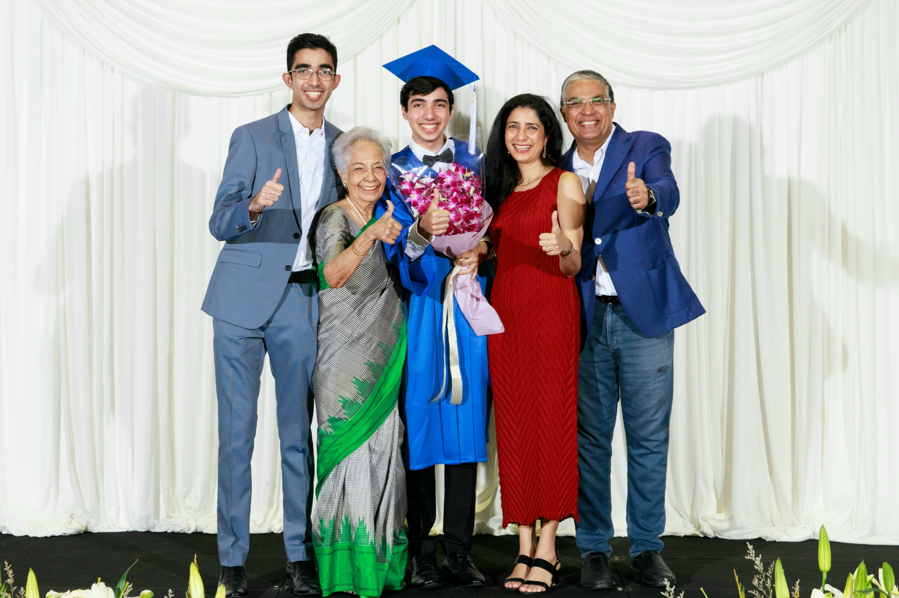

My name is Shivam and I grew up in Bangkok and Singapore — and now live in Providence, Rhode Island. Being raised in a tight-knit Indian diaspora community, I saw firsthand how immigration shapes culture, language, and even diet. To this day, my grandma speaks a concoction of Punjabi, Thai, and English: a unique mix that’s unfamiliar to most outsiders but feels just like home to me. I’m a third-culture kid; each place I’ve called home has felt, to some extent, transitory. Though being a vagabond comes with its challenges, it also offers a kind of freedom.
I grew up spending holidays with relatives in India, and learning more about my heritage is an ongoing mission. I hope to reflect more deeply on this land of immense multitudes which, even from afar—and despite never having lived there—feels like a part of me.
Even while we are spread out over countries and continents, I continue to learn so much from my family. My brother is a budding entrepreneur, and his idealism and passion for his business constantly inspires me. I’m lucky to come from a family with a wide range of careers and callings, from elementary school education to textile trading. Growing up around such diverse paths taught me early on that a fulfilling life can take so many different forms.
